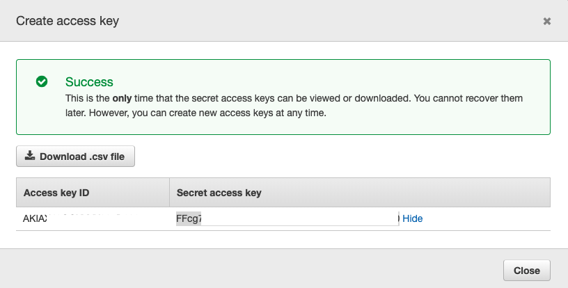

UMD AI/ML Workshop
To get your account for the lab - please go to https://static.myoctank.net/public/umd-ai-workshop.html
Please find your lab user name and save the URL. This link will be unavailable soon.
Agenda
Day 1
9:00 - 12:00: Introduction to Machine Learning on AWS
12:00 - 13:00: Lunch
13:00 - 14:00: Personalize - recommendation engine
14:00 - 17:00: Lab 1 - SageMaker and Customer churn analysis
Day 2
9:00 - 12:00: Introduction to AI and Machine Learning Services on AWS
12:00 - 13:00: Lunch
13:00 - 15:00: Lab 2 - Web application with Transcribe and Comprehend
15:00 - 17:00: Lab 3 - DeepRacer (optional)
Setup
Code repo: https://github.com/jxuamazon/ai-ml-workshop
Your AWS account: (will be available on the day of the workshop) https://dashboard.eventengine.run/login?hash=xxxxxxxxxxxx
Download https://static.myoctank.net/public/ai-ml-workshop.zip to a local folder. We will use it for lab 2.
If you want to run lab2 on your own computer
(You can ignore this if you are using Aplify from AWS console)
AWS Account: you need to have an AWS IAM user account that has the following permissions: S3FullAccess, AmazonTranscribeFullAccess, ComprehendFullAccess, AmazonSageMakerFullAccess
Python 3 installed
AWS CLI - installed
npm installed
Lab 1 - Customer Churn Analysis
Excerpt from
this blog post
Losing customers is costly for any business. Identifying unhappy customers early on gives you a chance to offer them incentives to stay.
This post describes using machine learning (ML) for the automated identification of unhappy customers, also known as customer churn prediction. ML models rarely give perfect predictions though, so my post is also about how to incorporate the relative costs of prediction mistakes when determining the financial outcome of using ML.
I use an example of churn that is familiar to all of us–leaving a mobile phone operator. Seems like I can always find fault with my provider du jour! And if my provider knows that I’m thinking of leaving, it can offer timely incentives–I can always use a phone upgrade or perhaps have a new feature activated–and I might just stick around. Incentives are often much more cost effective than losing and reacquiring a customer.
Instruction:
From AWS Console, Goto SageMaker
Notebook instances -> ml-workshop-notebook -> Open Jupyter
Open new terminal (under Files tab, far right: New/Terminal)
In the terminal window: %cd SageMaker
%git clone https://github.com/jxuamazon/ai-ml-workshop
In Jupyter Notebook, open ai-ml-workshop/lab-customer-churn/customer_churn_demo.ipynb
Kernel/Restart and Clear Output
"Run" go through each step
Lab 2 - Extract Sentiments from Voice using Amazon Transcribe and Comprehend
This application is based on this aws sample with modification
to add comprehend sentiment extraction.
Instruction:
Login to AWS Console
Goto IAM -> Users -> transcribe-user -> Security Credentials -> Create access key. Record the Access key ID and Secret access key for later use

From AWS Console/Services: Go to "AWS Amplify"
Expand the menu icon on the left -> All apps -> "Connect app" - chose Deploy without Git provider
Fill in "App name", "Environment Name" and use
"Drag and Drop" : ai-ml-workshop.zip
Save and Deploy
Once deployment is completed, click on the "Demo Transcribe and Comprehend application" link below
* If you use Git provider (e.g Github), you can automatically redeploy the app whenever new code is checked in. And Amplify will take care of the build and deployment for you.
Demo Transcribe and Comprehend application
Using Cloud9 IDE to work with the code
From AWS Console -> Cloud9
Create an environment, with t3.small
File -> upload local files : select the ai-ml-workshop.zip file you downloaded
Or you can clone the soruce in the terminal window : git clone https://github.com/jxuamazon/ai-ml-workshop
In the console window, unzip ai-ml-workshop.zip
Lab 3 - DeepRacer
Instriuction:
From AWS Console - DeepRacer
Create a new model
Modify the reward function - use example reward functions
Use RoboMaker to view the simulation